Anestesia
Máquinas de anestesia y soluciones para quirófano, compatibles con entornos de alta exigencia, incluida la Resonancia Magnética.
Ver equipos →Tecnología médica para áreas críticas · México
Equipamos su área crítica con anestesia, ventilación y monitoreo confiables. Instalamos, capacitamos y damos mantenimiento.
Instituciones públicas y privadas
que confían en nosotros
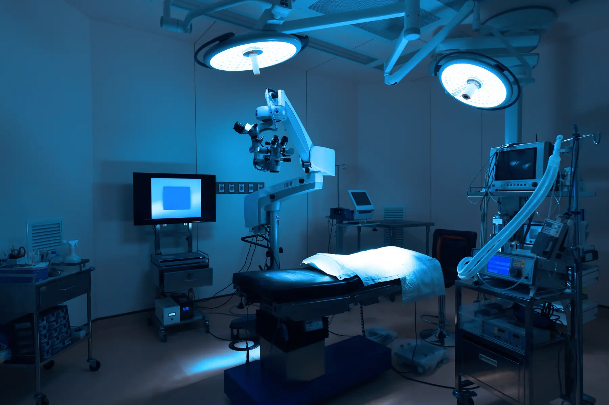
01 Quiénes somos
Aryes Health concentra su experiencia en el soporte vital respiratorio y la vigilancia constante de los signos del paciente. Anestesia, ventilación mecánica y monitoreo son nuestro centro. Desde ahí acompañamos al equipo clínico con tecnología confiable, instalación y mantenimiento.
Nos centramos en proyectos que mejoran la eficiencia operativa de los centros de salud. Junto a nuestros clientes enfrentamos el reto de modernizar sus instalaciones y servicios con tecnologías de vanguardia, procedimientos probados y protocolos clínicos actualizados.
Por qué existimos
Detrás de cada máquina de anestesia, cada ventilador y cada monitor hay una persona que confía su momento más frágil a la tecnología que entregamos. Ese es el peso que asumimos.
02 Especialidades
El respiratorio y el monitoreo son nuestra especialidad y nuestra carta de presentación.
Máquinas de anestesia y soluciones para quirófano, compatibles con entornos de alta exigencia, incluida la Resonancia Magnética.
Ver equipos →Ventiladores mecánicos pulmonares de última generación para el cuidado del paciente crítico, del neonato al adulto.
Ver equipos →Monitores de signos vitales fiables e intuitivos para vigilancia continua. Su equipo los domina desde el primer turno.
Ver equipos →Cuando un proyecto integral lo exige, sumamos equipamiento y servicios complementarios para resolver de extremo a extremo.
03 Equipamiento médico
Estamos comprometidos con el cuidado de la salud de las personas y de los pacientes. Cada equipo se entrega instalado, con capacitación y respaldo técnico.
Prestamos especial atención al sector de la anestesia, con una amplia gama de productos tecnológicamente avanzados, compatibles y adecuados para su uso en Resonancia Magnética.
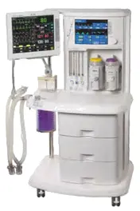
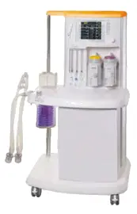
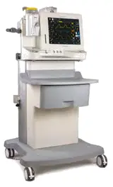
Para nuestra línea de monitoreo ofrecemos soluciones compatibles incluso con cámaras hiperbáricas a profundidades de hasta 60 metros. Monitoreo claro e intuitivo: su equipo lo domina desde el primer turno.
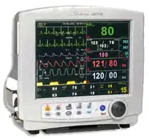
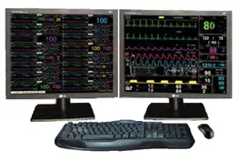
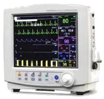
En el cuidado respiratorio ofrecemos productos de última generación que mejoran significativamente la calidad de vida de los pacientes, del paciente crítico al neonatal.
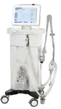
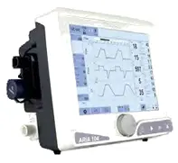
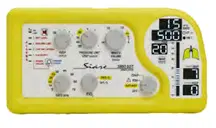
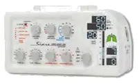
04 Hacia dónde vamos
Garantizar a las instituciones de salud el acceso a tecnología de anestesia, ventilación y monitoreo confiable, acompañándolas desde la instalación hasta el mantenimiento, para que cada equipo opere con la precisión que la vida del paciente exige.
Ser la marca de referencia en soporte vital respiratorio y monitoreo del paciente crítico en México, reconocida porque, donde está Aryes Health, el equipo clínico trabaja con tranquilidad y confianza absoluta.
05 Valores
Los principios que ordenan cada decisión y cada conversación con nuestros clientes.
Respondemos con equipos probados y soporte que no falla.
Calidad sin concesiones, en el producto y en cada punto de contacto del servicio.
Tecnología de vanguardia, accesible y pensada para el operador real.
Relaciones de largo plazo construidas sobre transparencia y cumplimiento.
Estamos presentes desde la instalación hasta el último mantenimiento.
Hacemos lo correcto, también cuando nadie está mirando.
06 Cómo trabajamos
Al trabajar con gobiernos buscamos mejorar la atención primaria y facilitar el acceso a cuidados preventivos y críticos, empoderando a los actores clave. Contamos con un equipo de gestores e ingenieros experimentados en tecnología médica y servicios clínicos, apoyados por una red internacional de asesores.
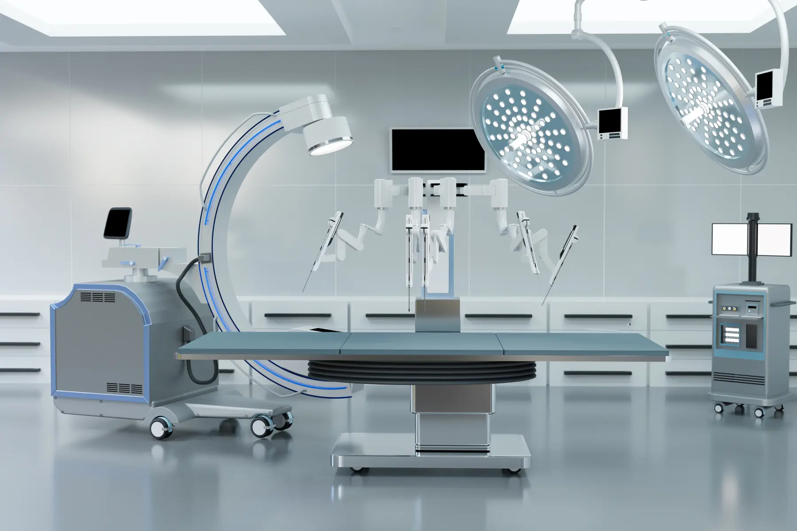
Analizamos el área crítica y definimos la solución que la operación del centro de salud necesita.
Equipos de marcas líderes en tecnología médica, con procedimientos probados.
Puesta en marcha a cargo de ingenieros especializados, conforme a protocolos clínicos actualizados.
Formamos al personal para que domine cada equipo desde el primer turno.
Respaldo técnico continuo para que el soporte vital nunca se detenga.
07 Clientes
Atendemos instituciones gubernamentales y privadas con soluciones tecnológicas y servicios adaptados a sus necesidades, garantizando acceso a equipos médicos de alta calidad y optimizando su operación.
08 Alianza estratégica
Comprometidos con la excelencia y la innovación, establecemos alianzas con fabricantes de referencia para ofrecer lo mejor en equipos médicos de diversas especialidades.
Cuéntenos sobre su área crítica. Un especialista de Aryes Health le contactará para proponer la solución adecuada.